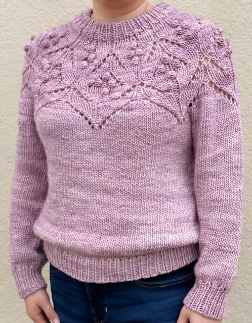
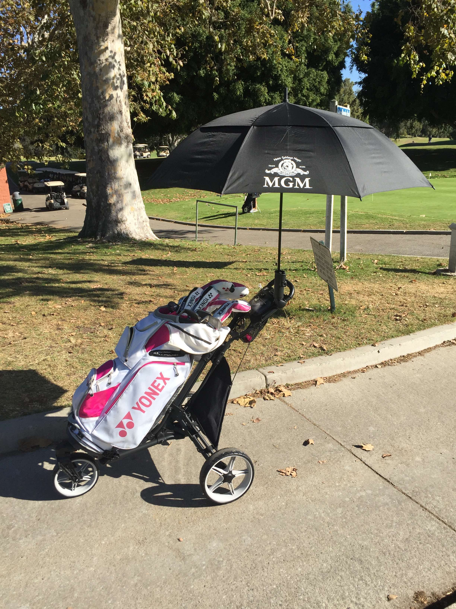
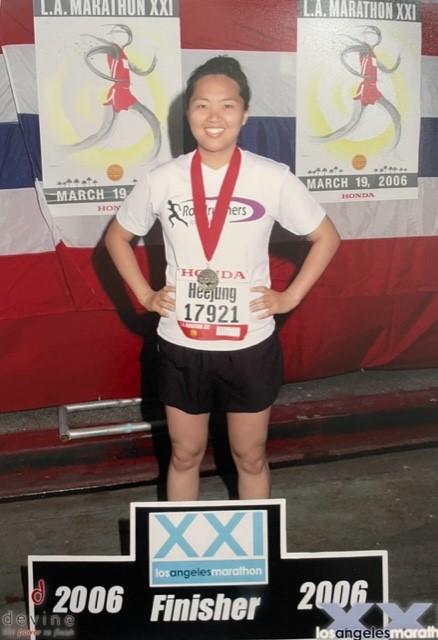
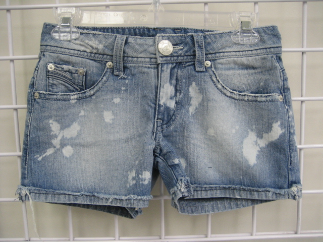
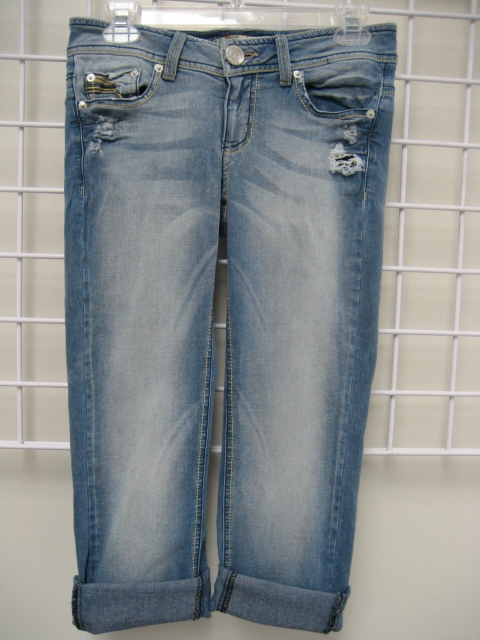
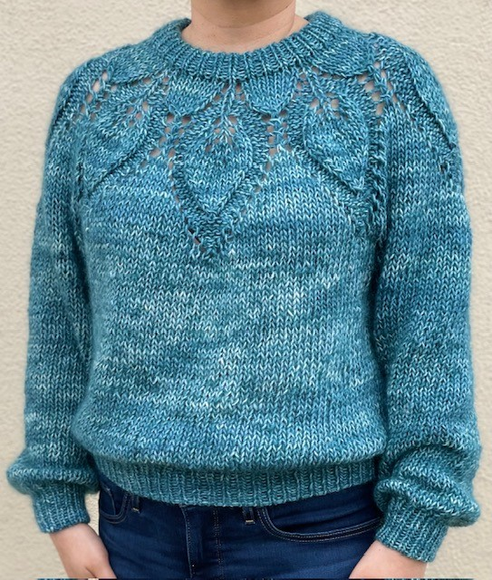
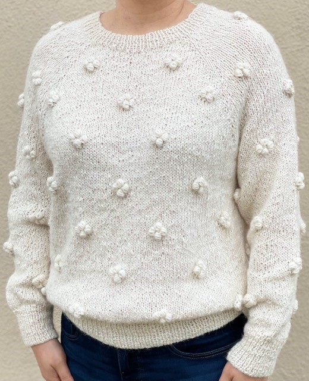

Frontend Software Engineer
I'm a Frontend Software Engineer who combines my fashion design roots with newfound frontend development prowess, to bring a blend of creativity and technical acumen to the digital realm. My passion for design and coding converge to create captivating web experiences that harmonize style and functionality, ensuring every user interaction is a work of art.
My favorite indoor activity is Knitting.
My preferred outdoor activity is Golfing.
I have completed two LA Marathons but I prefer Golfing to Running.
Denim short designed by me.
Denim bermuda designed by me.
Another handknit sweater.
One last sweater pic.
Los Angeles, US
Beauty Organizer
JavaBook
Book Guide